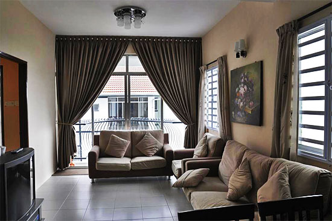

Rose Apartment

Rose Apartment is a new condominium at Kea Farm in Brinchang, providing budget family accommodation through several hotel operators, mostly in three bedroom apartment units with beds for at least eight pax, and a kitchen with stove and fridge. An LCD television set with satellite channels is usually standard, along with hot water in the bathrooms, but Wifi Internet access is limited. A private balcony comes attached with every unit. To reach Rose Apartment from Brinchang town, head towards Kea Farm's vegetable market along the main road (just before Equatorial Resort), then turn in through the stalls and people. The road leads directly to Rose Apartment at left, just before the Rose Center.